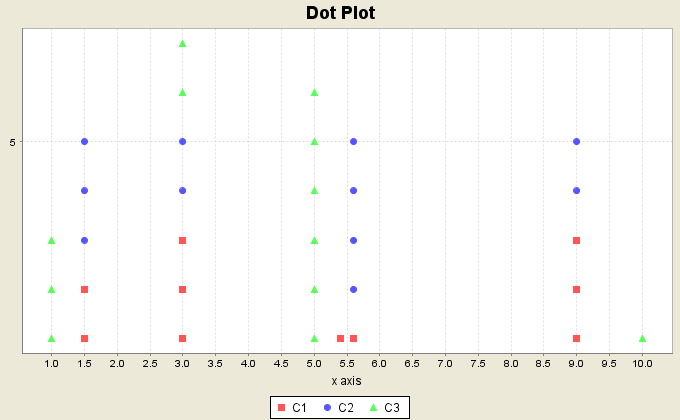

A dot plot shows the occurrences of each distinct data value as a stack of dots. Thus, the height of a stack at a data value represents its frequency.

The box plot graph utility allows the user to specify the graph variable(s) containing data values and a dot plot for them. The dots for each graph variable is shown differently, and the dots for repeated values for different graph variables are stacked.
It also provides the options of providing a plot title, specifying the x- and y- axis labels, and showing the legend.